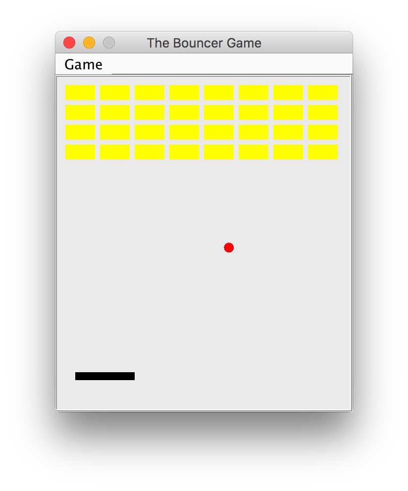

Let's watch a demo on the screen. Please save it as lab10Demo.jar, and double click it.

Assessment
- Download the ZIP file lab10.zip which contains a skeleton of the game.
- You need to apply the Multi Threading technique in this assessment.
- You need to modify only the GameEngine.java
- Modify the
startGame()method such that one can start the game. ( Hint : create a thread and start it. )- Implement the suspend/resume function. ( Hint : use the given methods in SuspendRequestor class. )
- Implement the
suspendResumeGame(),requestSuspend(), andrequestResume()methods- Modify the
run()method such that one can pause/resume the game (by pressing 'p')